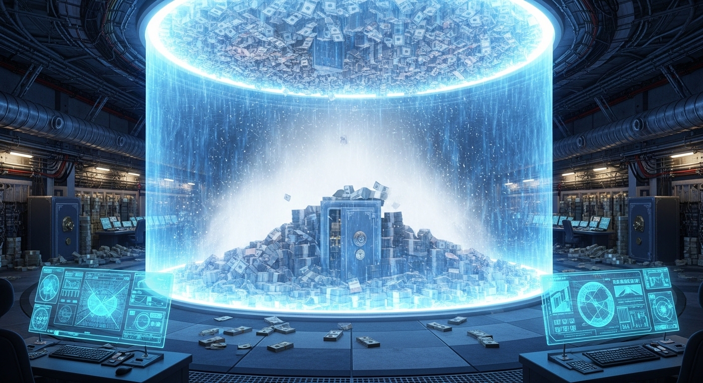
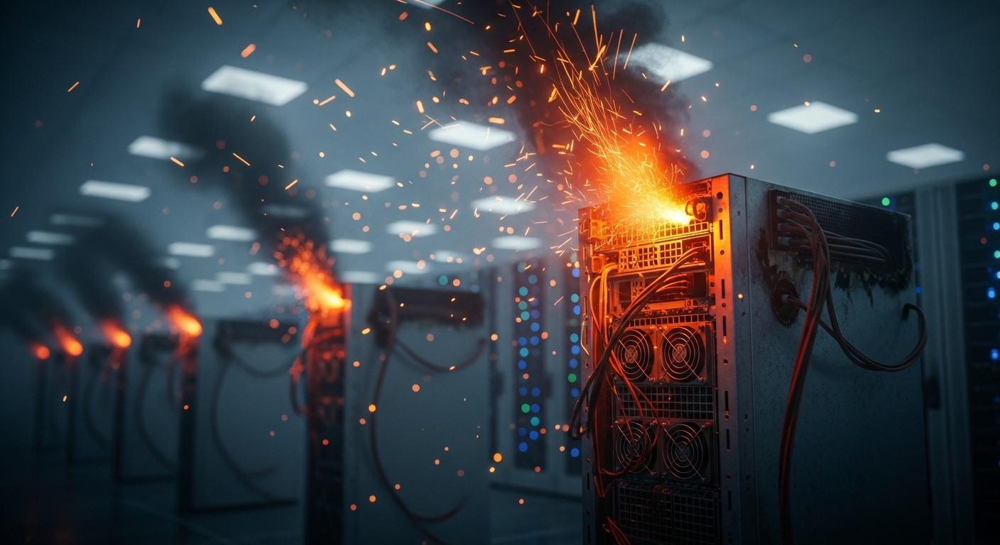
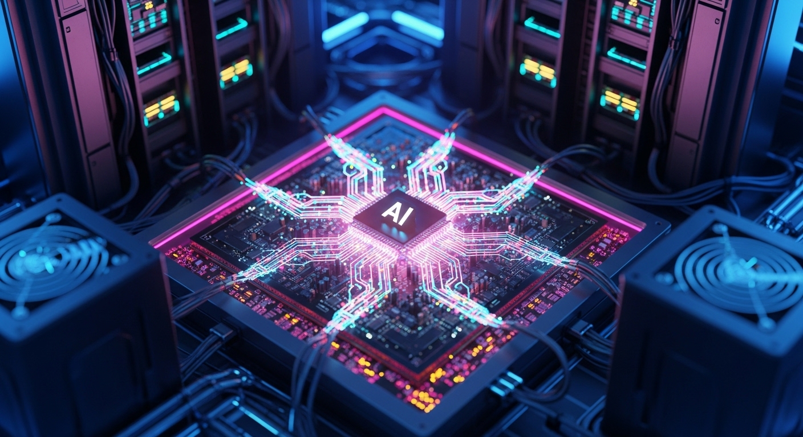

EQUITY FUNDAMENTALS
Domain Report: Structural Decoupling & The New Corporate Treasury
Goal Directive
Identify publicly traded companies with significant cryptocurrency exposure, categorize them by exposure type such as mining, exchanges, or direct holdings, and conduct fundamental financial analysis on their balance sheets and revenue models.
Executive Summary
The landscape of publicly traded digital asset equities has undergone a profound transformation. What once served as a collection of highly speculative, correlation-heavy equities has matured into a sophisticated ecosystem. This report synthesizes key operational, structural, and financial developments across 14 major public companies with significant cryptocurrency exposure, evaluating them through the lens of Q1 2026 financial performance, operational pivots, and evolving regulatory frameworks.
- [01]The Corporate Treasury Evolution: Led by MicroStrategy (and mirrored globally by firms like Metaplanet in Japan and Boyaa Interactive in Hong Kong), corporations are increasingly operating as synthetic Bitcoin proxies. MicroStrategy has achieved an unprecedented asset allocation, with 95.1% of its total balance sheet composed of digital assets.
- [02]Severe Margin Compression for Miners: The April 2024 halving, combined with a 24% increase in network difficulty, has severely degraded pure-play mining economics. Baseline production costs have doubled, pushing the cost to mine a single Bitcoin to $40,047 for Marathon Digital and $44,629 for Riot Platforms.
- [03]The Pivot to High-Performance Computing (HPC) & AI: To survive margin compression, miners are actively transitioning excess data center capacity to support high-performance computing (HPC) and artificial intelligence workloads.
1. Classification of Publicly Traded Crypto Equities
The public market's crypto ecosystem has diversified into four distinct categories.
Direct Holdings & Treasury
Companies utilizing corporate balance sheets to hold large Bitcoin reserves as a primary treasury asset. Metaplanet ("Asian MicroStrategy") and Boyaa Interactive highlight the globalization of this treasury-proxy model.
Exchanges & Trading
Infrastructure providers capturing fee and spread-based revenue from retail and institutional trading, custodial services, and staking operations.
Mining Operations
Industrial self-mining enterprises managing heavy capital expenditure cycles, high energy infrastructure, and transitioning into hosting for AI/HPC.
Financial Enablers
Fintech and asset management platforms integrating digital assets into retail consumer apps (Cash App, PayPal) or offering institutional prime brokerage and asset management.

2. Comparative Balance Sheet & Liquidity Analysis (Q1 2026)
An analysis of key balance sheets in Q1 2026 reveals two contrasting operational philosophies: highly leveraged corporate treasury proxies and highly liquid, risk-insulated fintech networks.
| Company | Total Assets | Corporate Cash | Crypto Holdings | Total Debt | Shareholder Equity | Crypto/Assets Ratio |
|---|---|---|---|---|---|---|
| MicroStrategy (MSTR) | $54.27 B | $2.21 B | $51.60 B | $8.17 B | $45.64 B | 95.1% |
| Coinbase (COIN) | $28.85 B | $11.30 B | $3.04 B | $7.80 B | $13.50 B | 10.5% |
| Block, Inc. (SQ) | $39.99 B | $8.50 B | $0.78 B | $7.80 B | $21.68 B | 1.9% |
| Marathon Digital (MARA) | $4.95 B | $0.51 B | $2.41 B | $2.45 B | $2.33 B | 48.7% |
| Riot Platforms (RIOT) | $3.44 B | $0.21 B | $1.10 B | $0.59 B | $2.39 B | 32.0% |
The Leverage Profile of MicroStrategy
MicroStrategy operates with an aggressive capital structure. By issuing $8.17 billion in cheap, long-dated convertible debt, the firm has acquired $51.60 billion in Bitcoin. While this structure maximizes equity upside during market expansions, it carries high refinancing and volatility risks.
The Fintech Liquidity Cushion
In contrast to the levered-proxy model, traditional fintech players like Coinbase and Block maintain highly liquid, risk-insulated balance sheets. Coinbase and Block hold $11.30 billion and $8.50 billion in cash respectively—capital reserves that comfortably exceed their outstanding debt burdens.
Mining Balance Sheet Exposure
Industrial miners Marathon Digital and Riot Platforms carry high direct exposure to volatile digital assets, making up 48.7% and 32.0% of their total balance sheets respectively. Marathon's aggressive "balance-sheet HODL" policy has resulted in a high crypto-to-asset ratio, though it also carries $2.45 billion in debt.
3. Revenue Models and Financial Performance
The business models of crypto-exposed firms are highly sensitive to market cycles. The Q1 2026 earnings reports reflect a challenging macroeconomic period characterized by lower transaction volumes and post-halving operational stress.

The Post-Halving Mining Squeeze
Mining unit economics have deteriorated severely. Following the April 2024 halving and subsequent network difficulty spikes (+24%), the cost of production has surged. Marathon's cost to mine a single Bitcoin rose to $40,047, while Riot's reached $44,629. This has heavily compressed gross margins, prompting the strategic transition toward high-margin AI and HPC hosting services.

The Pivot to AI / HPC
Marathon (MARA) & Riot (RIOT): Historically reliant on Bitcoin block rewards and transaction fees. Both have initiated structural shifts toward Data Center & HPC Hosting—monetizing massive power infrastructure by contracting out data center capacity to enterprise clients (e.g., Riot contracting 50 MW of capacity to AMD).
4. Accounting Standards & Market Dynamics
The ASU 2023-08 Accounting Shift
Historically, under ASC 350, digital assets were categorized as indefinite-lived intangible assets. This "cost-less-impairment" model did not accurately reflect corporate asset values. The adoption of ASU 2023-08 (Subtopic 350-60) revolutionized this system:
- Fair Value Measurement: Fungible digital assets must now be measured at fair value under ASC 820.
- Mark-to-Market Adjustments: Companies mark their digital assets to current market exit prices at the end of each reporting period.
- GAAP Earnings Volatility: While this eliminates artificial balance sheet erosion, all unrealized gains and losses flow directly into net income. This change creates major swings in GAAP earnings, as demonstrated by the multi-billion-dollar paper losses reported by MicroStrategy (-$12.8 billion) and Marathon (-$1.3 billion) in Q1 2026.
Market Correlation and Asymmetric Beta
MICROSTRATEGY (MSTR) ASYMMETRIC BETA IN 2026
▲ 3.0x Upside Beta
│
───────────────────┼───────────────────
│
▼ 0.4x Downside Beta
MicroStrategy (MSTR) historically maintained a 1.5x to 1.8x correlation to Bitcoin. In 2026, its correlation became asymmetric—demonstrating an upside beta of approximately 3.0x during market rallies, while maintaining a downside beta of just 0.4x during market corrections. This indicates that market participants are increasingly treating MSTR as a leveraged call option on Bitcoin with downside protection, likely due to the company's long-dated, fixed-rate debt structure.